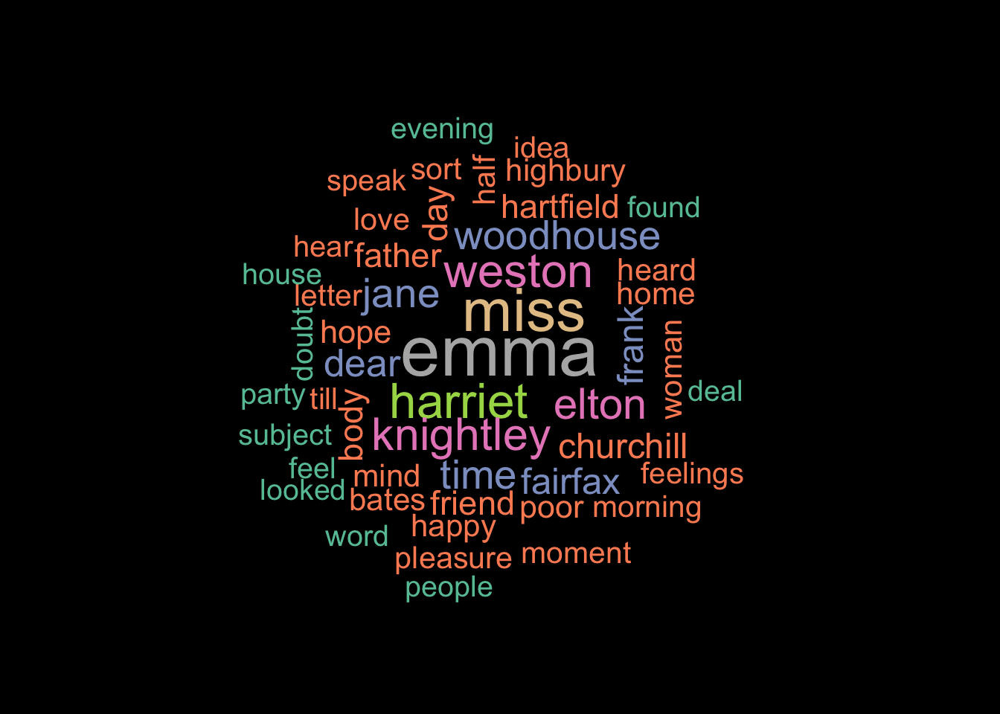

library(wordcloud)
library(RColorBrewer)
with(emma_words, wordcloud(words = words,
freq = freq,
max.words = 100,
min.freq = 0.5,
scale = c(3, 1),
random.order = FALSE))R Tip of the Day
This presentation on the wordcloud, wordcloud2, and emojifont packages can be downloaded here
Why Word Clouds?
Word clouds are useful tools when…
-analyzing text data
-presenting qualitative data
-identifying key terms in texts
-gathering survey/feedback data
Wordcloud
Loading the required packages
Data wrangling
tidy_austen <- all_austen |>
unnest_tokens(output = "word", input = text) |>
filter(chapter > 0)
emma_words <- tidy_austen |>
anti_join(stop_words, by = c("word" = "word")) |>
count(book, word, name = "freq") |>
filter(book == "Emma") |>
slice_max(order_by = freq, n = 200, with_ties = FALSE) |>
mutate(freq = as.numeric(freq),
freq = freq/10) |>
rename("words" = "word") |>
select(-book)Data wrangling
tidy_austen <- all_austen |>
unnest_tokens(output = "word", input = text) |>
filter(chapter > 0)
emma_words <- tidy_austen |>
anti_join(stop_words, by = c("word" = "word")) |>
count(book, word, name = "freq") |>
filter(book == "Emma") |>
slice_max(order_by = freq, n = 200, with_ties = FALSE) |>
mutate(freq = as.numeric(freq),
freq = freq/10) |>
rename("words" = "word") |>
select(-book)Making the cloud
with(emma_words, wordcloud(words = words,
freq = freq,
max.words = 100,
min.freq = 0.5,
scale = c(3, 1),
random.order = FALSEAdding details
par(bg = "black")
with(emma_words, wordcloud(words = words,
freq = freq,
max.words = 50,
min.freq = 0.5,
scale = c(3, 1),
random.order = FALSE,
colors = brewer.pal(12, "Set2")))par(bg = "black")
with(emma_words, wordcloud(words = words,
freq = freq,
max.words = 50,
min.freq = 0.5,
scale = c(3, 1),
random.order = FALSE,
colors = brewer.pal(12, "Set2")))Warning in brewer.pal(12, "Set2"): n too large, allowed maximum for palette Set2 is 8
Returning the palette you asked for with that many colors
Wordcloud2
Installing Wordcloud2
Making the cloud
wordcloud2(data = emma_words,
color = "random-dark")require(devtools)Loading required package: devtoolsLoading required package: usethisinstall_github("lchiffon/wordcloud2")Using GitHub PAT from the git credential store.Skipping install of 'wordcloud2' from a github remote, the SHA1 (8a12a3b6) has not changed since last install.
Use `force = TRUE` to force installationlibrary(wordcloud2)
wordcloud2(data = emma_words,
color = "random-dark")Customization
wordcloud2(data = emma_words,
fontFamily = "Futura",
color = "random-dark",
backgroundColor = "navy",
shape = 'star')wordcloud2(data = emma_words,
size = 0.5,
fontFamily = "Futura",
color = "random-light",
backgroundColor = "navyblue",
shape = 'star')More Customization
letterCloud(emma_words, word = "EMMA", size = 0.75)
But Wait, There’s More!
Emojifont Package!
Emojifont Package!
penguins_adelie |>
ggplot(aes(x = body_mass_g, y = flipper_length_mm)) +
geom_text(aes(color = type, label = label), family = "EmojiOne", size = 6) +
geom_smooth(method = lm, se = FALSE, size = 0.2, color = "black") +
scale_color_manual(values = c("female" = "pink", "male" = "blue", "NA" = "black")) +
labs(title = "As body mass increases, \nflipper length also increases",
subtitle = paste0("For Adelie penguins"),
x = "Body Mass",
y = "Flipper Length",
color = "Sex") +
theme_classic() +
theme(legend.position = "none")Emojifont Package!
library(emojifont)
library(palmerpenguins)
library(ggplot2)
library(tidyverse)
library(dplyr)
penguins <- penguinspenguins_adelie <- penguins |>
filter(species == "Adelie") |>
mutate(label = emoji("penguin"),
type = sex)
penguins_adelie |>
ggplot(aes(x = body_mass_g, y = flipper_length_mm)) +
geom_text(aes(color = type, label = label), family = "EmojiOne", size = 6) +
geom_smooth(method = lm, se = FALSE, size = 0.2, color = "black") +
scale_color_manual(values = c("female" = "deeppink3", "male" = "deepskyblue4", "NA" = "black")) +
labs(title = "As Body Mass Increases, \nFlipper Length Also Increases",
subtitle = paste0("For the Adelie Species"),
x = "Body Mass",
y = "Flipper Length",
color = "Sex") +
theme_classic() +
theme(legend.position = "none")Warning: Using `size` aesthetic for lines was deprecated in ggplot2 3.4.0.
ℹ Please use `linewidth` instead.`geom_smooth()` using formula = 'y ~ x'Warning: Removed 1 row containing non-finite outside the scale range
(`stat_smooth()`).Warning: Removed 1 row containing missing values or values outside the scale range
(`geom_text()`).